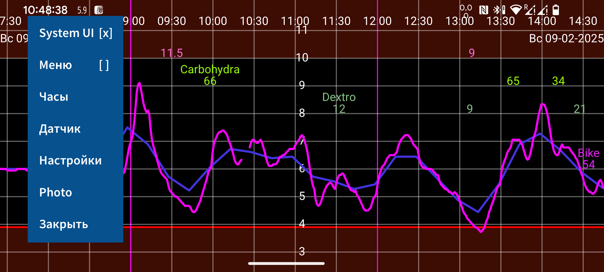
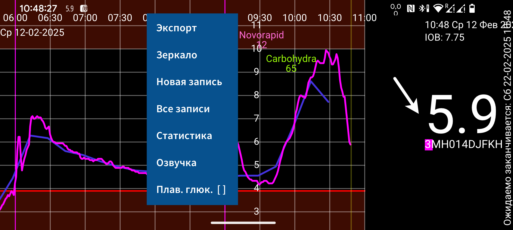
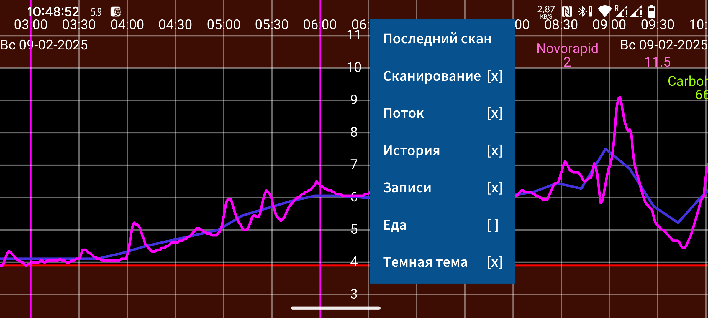
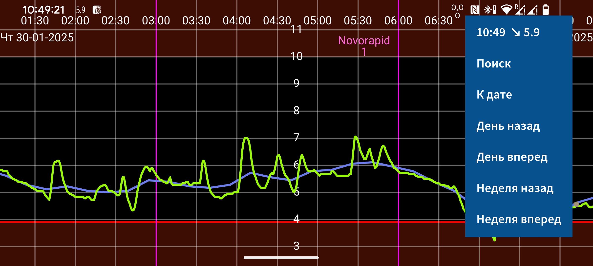

Juggluco — приложение, которое помогает людям с диабетом отслеживать и управлять уровнем глюкозы крови. Оно может сканировать датчики FreeStyle Libre 0 и 2 через NFC и получать по Bluetooth значения глюкозы от датчиков FreeStyle Libre 2, 2+, 3, 3+, Sibionics GS1Sb и GS3, Dexcom G7/ONE+, Accu-Chek SmartGuide, CareSens Air и Linx/Lumiflex/Aidex X.
При первом запуске программы можно отсканировать датчик FreeStyle Libre 2, поднеся его к NFC-датчику смартфона. После этого Juggluco попытается установить Bluetooth-соединение с датчиком FreeStyle Libre 2 и будет получать значение глюкозы каждую минуту без дальнейшего сканирования. Чтобы перенять датчик FreeStyle Libre 3 или 3+, активированный приложением Abbott Libre 3, укажите данные учетной записи LibreView, использованные при активации датчика, в Настройки→Обмен данными→LibreView, нажмите «Получить Account ID» и дождитесь получения Account ID перед сканированием. Нельзя перенять датчик Libre 3, запущенный считывателем FreeStyle Libre 3 или американским приложением Libre для Libre 2 и Libre 3. Juggluco также может активировать все перечисленные датчики, кроме, возможно, Accu-Chek SmartGuide.
Для подключения датчиков Sibionics GS1Sb, Dexcom G7/ONE+, Accu-Chek SmartGuide, CareSens Air или Linx/Lumiflex/Aidex X нужно отсканировать их матрицу данных через левое меню→Фото. Датчики Dexcom G7/ONE+ сопрягаются по Bluetooth. На большинстве телефонов запрос сопряжения нужно подтвердить быстро, иначе придется ждать еще 5 минут. Держите экран включенным, пока ждете. На Samsung Galaxy Watch 4 и 7 подтверждать сопряжение не нужно. Израсходованные датчики Dexcom G7/ONE+ еще долго остаются доступными по Bluetooth после прекращения записи значений глюкозы. Чтобы Juggluco не пытался сопрячься не с тем датчиком, держите старые датчики вне зоны Bluetooth, например в 15 метрах или в микроволновке как клетке Фарадея, особенно если у старого датчика тот же PIN-код, что у нового. Остановите или удалите приложения и устройства, которые раньше подключались к датчику. При сопряжении датчиков Accu-Chek SmartGuide нужно ввести PIN.
Чтобы запустить датчик Sibionics GS3 через Juggluco, отсканируйте матрицу данных на упаковке или сам датчик через NFC. Затем появится экран, где нужно ввести ID. Если датчик уже использовался с приложением Sibionics GS3 или вы хотите позже пользоваться этим приложением, введите e-mail и пароль от приложения Sibionics GS3 и получите account ID с сервера. Если датчик новый и будет использоваться только с Juggluco, можно ввести произвольное число.
Дополнительная информация о подключении датчиков: https://www.juggluco.nl/Juggluco/sensors.
В программе есть четыре меню. Коснитесь пустой части экрана, чтобы открыть меню. Касание левой четверти экрана открывает левое меню; касание левой половины средней области открывает второе меню; касание правой половины средней области открывает третье меню; касание правой четверти открывает четвертое меню.
Меню 4: перемещение (справа)
15:10 ↗ 93
Поиск
Дата
День назад
День вперед
Неделя назад
Неделя вперед
Кривую можно перемещать влево и вправо жестом по экрану или через правое меню перемещения. Пункт Дата выбирает дату, Поиск ищет значения глюкозы и введенные записи. Первый пункт правого меню — текущее время; при выборе он переносит график вправо, то есть к текущему моменту.
Если в настройках включено ручное масштабирование глюкозы, движение вверх и вниз в верхней части экрана меняет максимум графика, а в нижней части — минимум. Если включено ручное масштабирование времени, период времени на экране можно увеличивать или уменьшать, меняя расстояние между двумя пальцами.
Меню 3: отображение
Скан
Сканы [x]
Поток [x]
История [x]
Записи [x]
Еда [ ]
Темная тема [x]
Правое среднее меню содержит параметры отображения. Чтобы посмотреть последний скан, коснитесь пункта Скан. Крестик после Сканы означает, что сканы отображаются на графике. Скан — это текущее значение глюкозы, полученное при сканировании датчика Libre 0 или 2 через NFC. Сканирование также переносит на телефон 15-минутные исторические значения за последние 8 часов. Их отображением управляет пункт История. Датчики Libre 3 отправляют исторические значения по Bluetooth каждые 5 минут. Поток — это значения глюкозы, которые датчики FreeStyle Libre 2 и 3 отправляют приложению по Bluetooth каждую минуту.
Можно вводить различные числа с любыми метками: инсулин, углеводы и активность. Они отображаются на графике глюкозы на фиксированной высоте в указанную дату и время. Касание точки графика или введенной записи показывает сведения об элементе. Запись можно изменить долгим нажатием или через список записей в левом среднем меню. Пункт Записи управляет отображением введенных чисел. В Настройках можно указать, какие метки использовать для этих чисел.
Меню 2: левое среднее
Экспорт
Зеркало
Новая запись
Список
Статистика
Озвучка
Плав. глюк. [ ]
Новые записи вводятся через Новая запись в левом среднем меню. Экспорт сохраняет данные в файл .tsv. Зеркало позволяет отправлять данные через IP/TCP в Juggluco на другом устройстве, чтобы там отображалась та же информация. Список показывает список введенных записей. Если Juggluco получил достаточно значений глюкозы по Bluetooth, Статистика показывает долю измерений в диапазонах глюкозы, индикатор управления глюкозой, вариабельность глюкозы и сводный график. В Озвучка можно включить проговаривание входящих значений глюкозы, элементов графика и сообщений. Плав. глюк. включает плавающее значение глюкозы, которое показывается поверх других приложений; в настройках можно изменить его цвет и размер.
Меню 1: левое
System UI [ ]
Меню [ ]
Часы
Датчик
Настройки
Фото
Закрыть
Стоп тревога
В левом меню находятся Настройки, где выбирают единицу глюкозы mmol/L или mg/dL, задают метки, тревоги глюкозы, напоминания о лекарствах и диапазоны отображения. System UI определяет, показываются ли элементы управления Android и строка состояния. В Часы настраивается отправка данных на разные умные часы. В Датчик можно посмотреть состояние соединения с датчиком. Пункт Меню показывает все четыре меню сразу в виде, который может читать TalkBack. Фото используется для сканирования матриц данных и QR-кодов. Закрыть выходит из Juggluco. Стоп тревога останавливает активную тревогу.